<title>Dated Booking Review</title>
<meta name="claude:viewport-fit-sides" content="cover">
<link rel="stylesheet" href="https://fonts.googleapis.com/css2?family=Manrope:wght@600;800&family=Inter:wght@400;500;600&display=swap">
<style>
/* Layout: one column of review sections; each shows the same phone screen before and after, side by side. */
:root { --bg:#F6F8FB; --surface:#FFFFFF; --fg:#1B242F; --muted:#586374; --line:#DCE1E8; --steel:#2B5A8C; --host:#C2412D; --ok:#2E7D4F;
  --display:"Manrope",system-ui,sans-serif; --body:"Inter",system-ui,sans-serif; }
@media (prefers-color-scheme: dark) { :root:not([data-theme="light"]) { --bg:#12171E; --surface:#1A212B; --fg:#E8EDF3; --muted:#A3AEBD; --line:#2C3644; --steel:#93B8E0; --host:#FF9C8A; --ok:#7DD9A0; color-scheme:dark } }
:root[data-theme="dark"] { --bg:#12171E; --surface:#1A212B; --fg:#E8EDF3; --muted:#A3AEBD; --line:#2C3644; --steel:#93B8E0; --host:#FF9C8A; --ok:#7DD9A0; color-scheme:dark }
body { background:var(--bg); color:var(--fg); font:400 16px/1.55 var(--body); }
main { max-width:880px; margin:0 auto; padding-block:40px 64px; padding-left:max(16px, env(safe-area-inset-left, 0px)); padding-right:max(16px, env(safe-area-inset-right, 0px)); display:flex; flex-direction:column; gap:40px; }
h1 { font:800 34px/1.15 var(--display); letter-spacing:-.5px; text-wrap:balance; margin:0; }
.lead { color:var(--muted); max-width:65ch; margin:12px 0 0; }
.note { border:1px solid var(--line); background:var(--surface); border-radius:12px; padding:16px 18px; display:flex; flex-direction:column; gap:8px; }
.note h3 { font:600 15px var(--display); margin:0; }
.note ul { margin:0; padding-left:20px; color:var(--muted); display:flex; flex-direction:column; gap:4px; }
section { display:flex; flex-direction:column; gap:16px; border-top:1px solid var(--line); padding-top:28px; }
section header { display:flex; flex-direction:column; gap:6px; }
h2 { font:800 22px/1.2 var(--display); margin:0; }
section header p { margin:0; color:var(--muted); max-width:65ch; }
.who { font:600 12px var(--body); letter-spacing:.08em; text-transform:uppercase; color:var(--steel); }
.who.host { color:var(--host); }
.pair { display:grid; grid-template-columns:repeat(2, minmax(0, 1fr)); gap:16px; }
figure { margin:0; display:flex; flex-direction:column; gap:8px; min-width:0; }
figure img { width:100%; height:auto; border:1px solid var(--line); border-radius:14px; display:block; background:var(--surface); }
figcaption { font:600 13px var(--body); color:var(--muted); }
.pair figure:last-child figcaption { color:var(--ok); }
details summary { cursor:pointer; font:600 14px var(--body); color:var(--steel); padding:6px 0; }
details summary:focus-visible { outline:2px solid var(--steel); outline-offset:3px; border-radius:4px; }
details .pair { margin-top:12px; }
@media (max-width:520px) { h1 { font-size:27px; } .pair { gap:10px; } }
</style>
<main>
<div>
<h1>Booking on real dates: before and after</h1>
<p class="lead">Five screens changed. Each is shown as it was in the published app and as it is now, in English, with the Arabic version folded underneath. Everything else in the app renders exactly as before.</p>
</div>
<div class="note">
<h3>Not visible in these pictures</h3>
<ul>
<li>A division with bookings keeps its rental type when the host edits it; prices and times stay editable.</li>
<li>Price fields accept decimals, and a monthly window that ends before it starts cannot be saved.</li>
<li>"Accept bookings up to N months" sits under a division's More options.</li>
<li>My Rentals and the host's request screens print the real dates and times of a dated request.</li>
<li>The pictures are test renders dated 8 November 2026, so the calendar shows November.</li>
</ul>
</div>
<section>
<header><span class="who professional">Professional</span><h2>Availability sheet</h2><p>The sheet opens on a month calendar. People pick real dates first, then the times free on each date. Days with free times carry a green dot; past, closed and fully booked days cannot be tapped.</p></header>
<div class="pair"><figure>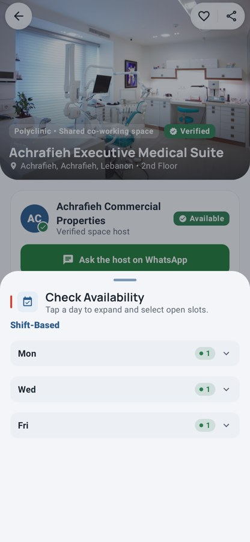<figcaption>Before</figcaption></figure><figure>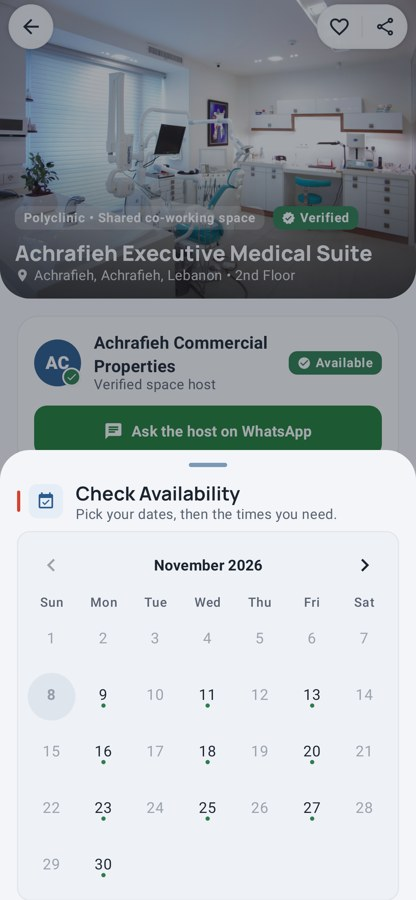<figcaption>After</figcaption></figure></div>
<details><summary>Arabic</summary><div class="pair"><figure>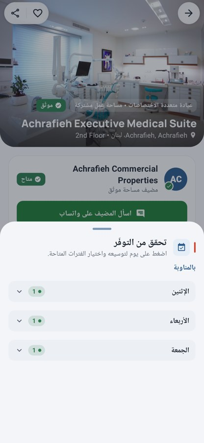<figcaption>Before, Arabic</figcaption></figure><figure>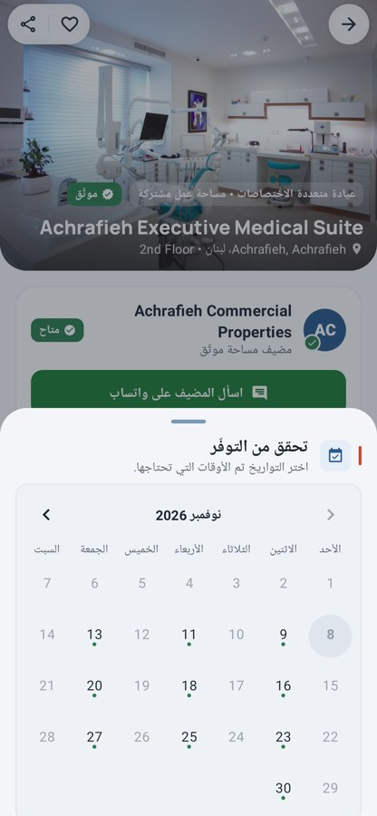<figcaption>After, Arabic</figcaption></figure></div></details>
</section>
<section>
<header><span class="who professional">Professional</span><h2>Re-book</h2><p>Re-book from My Rentals uses the same calendar as the availability sheet. The old weekday chips and the "Add a date" button are gone.</p></header>
<div class="pair"><figure>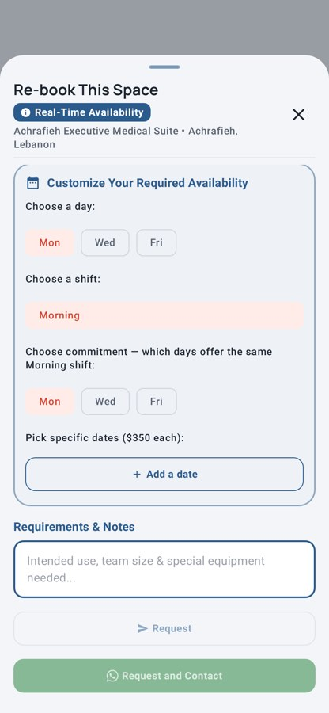<figcaption>Before</figcaption></figure><figure>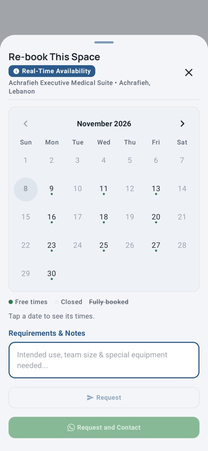<figcaption>After</figcaption></figure></div>
<details><summary>Arabic</summary><div class="pair"><figure>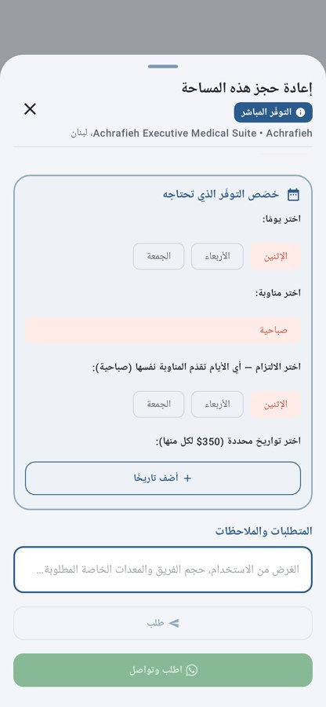<figcaption>Before, Arabic</figcaption></figure><figure>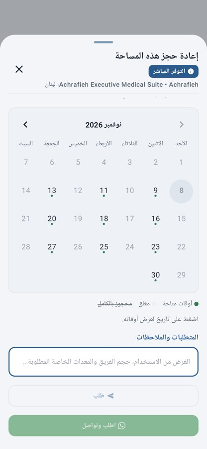<figcaption>After, Arabic</figcaption></figure></div></details>
</section>
<section>
<header><span class="who professional">Professional</span><h2>Change a booking</h2><p>Proposing a change to an accepted booking uses the same calendar. The booking being replaced no longer blocks its own dates.</p></header>
<div class="pair"><figure>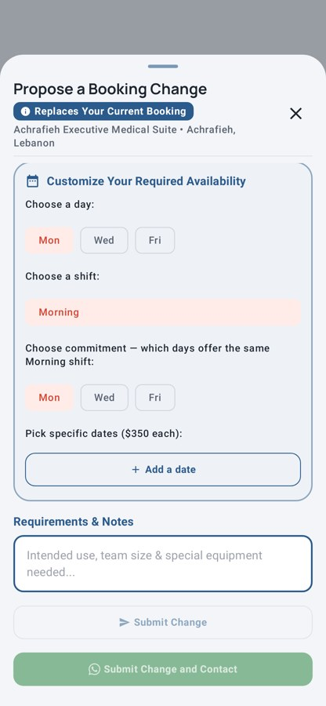<figcaption>Before</figcaption></figure><figure>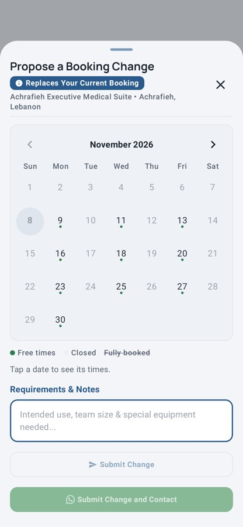<figcaption>After</figcaption></figure></div>
<details><summary>Arabic</summary><div class="pair"><figure>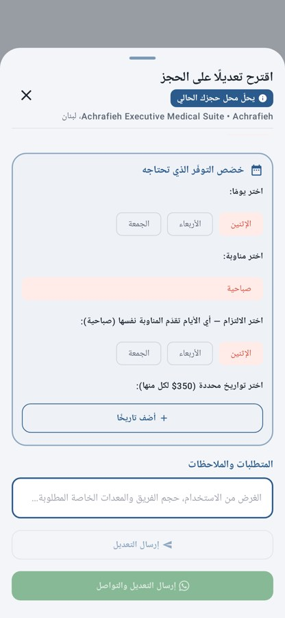<figcaption>Before, Arabic</figcaption></figure><figure>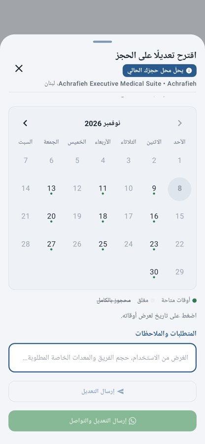<figcaption>After, Arabic</figcaption></figure></div></details>
</section>
<section>
<header><span class="who host">Host</span><h2>Listing wizard, hours step</h2><p>A new "Closed dates" row under the operating days. "Choose" opens a calendar to mark holidays and other days with no bookings. Facilities and House rules move down by one row.</p></header>
<div class="pair"><figure>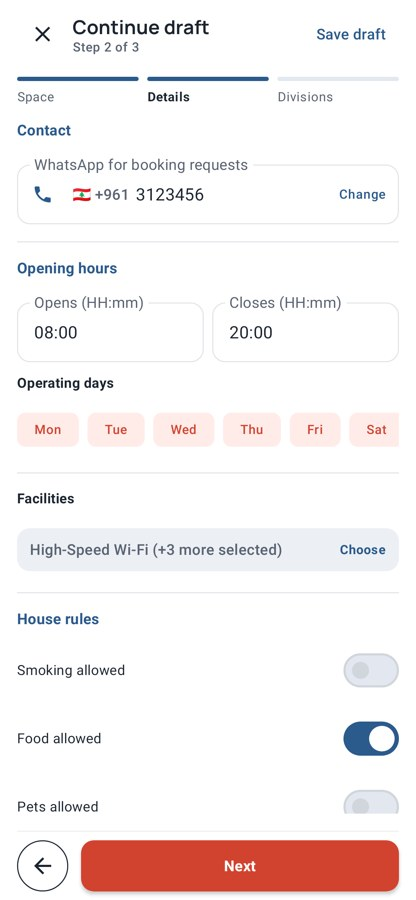<figcaption>Before</figcaption></figure><figure>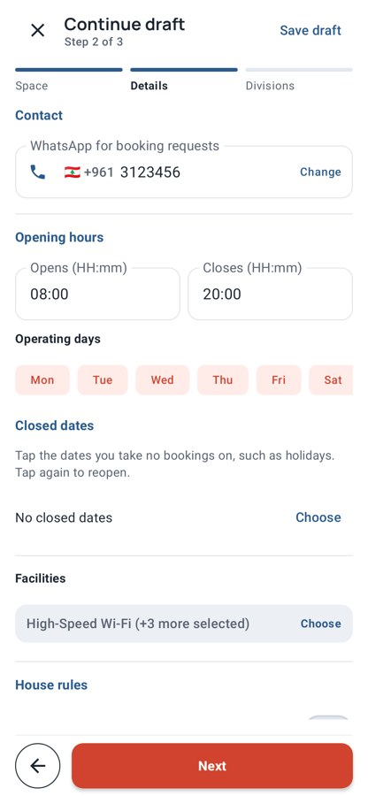<figcaption>After</figcaption></figure></div>
<details><summary>Arabic</summary><div class="pair"><figure>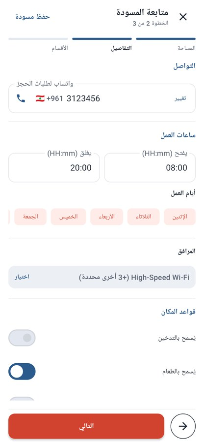<figcaption>Before, Arabic</figcaption></figure><figure>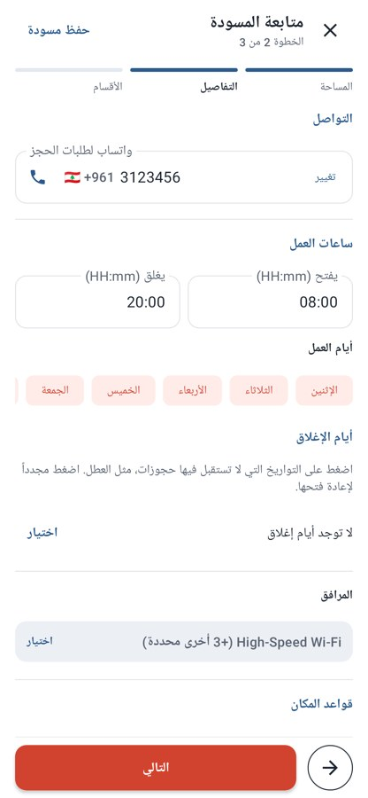<figcaption>After, Arabic</figcaption></figure></div></details>
</section>
<section>
<header><span class="who host">Host</span><h2>Manage page</h2><p>Under the seven-day table, a month calendar shows every date as free, fully booked or closed. It is read-only.</p></header>
<div class="pair"><figure>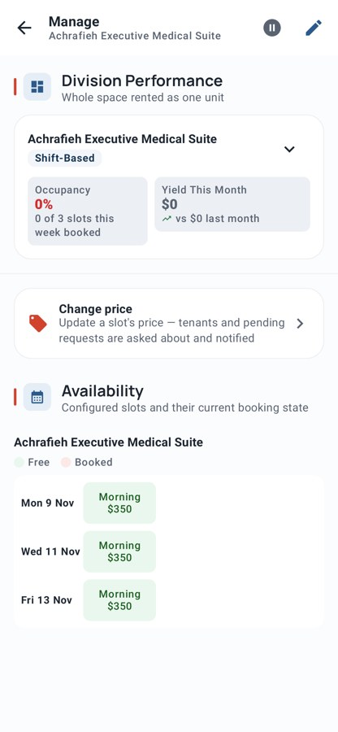<figcaption>Before</figcaption></figure><figure>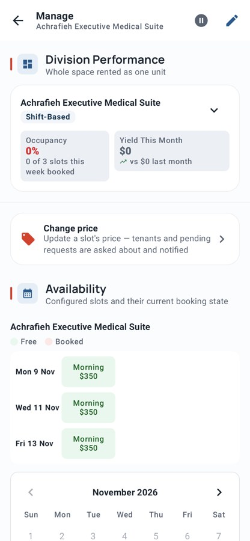<figcaption>After</figcaption></figure></div>
<details><summary>Arabic</summary><div class="pair"><figure>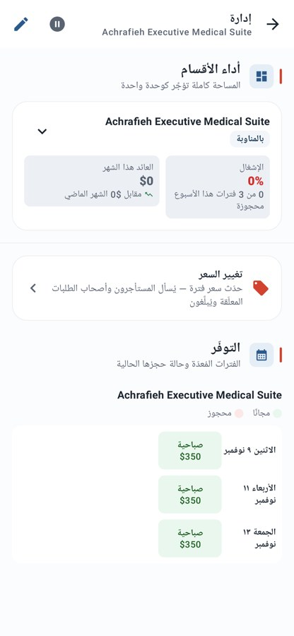<figcaption>Before, Arabic</figcaption></figure><figure>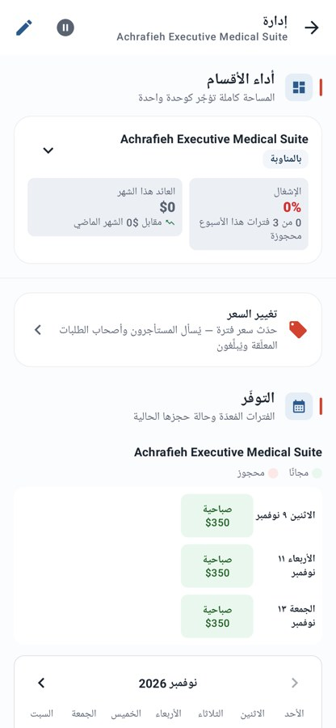<figcaption>After, Arabic</figcaption></figure></div></details>
</section>
</main>
